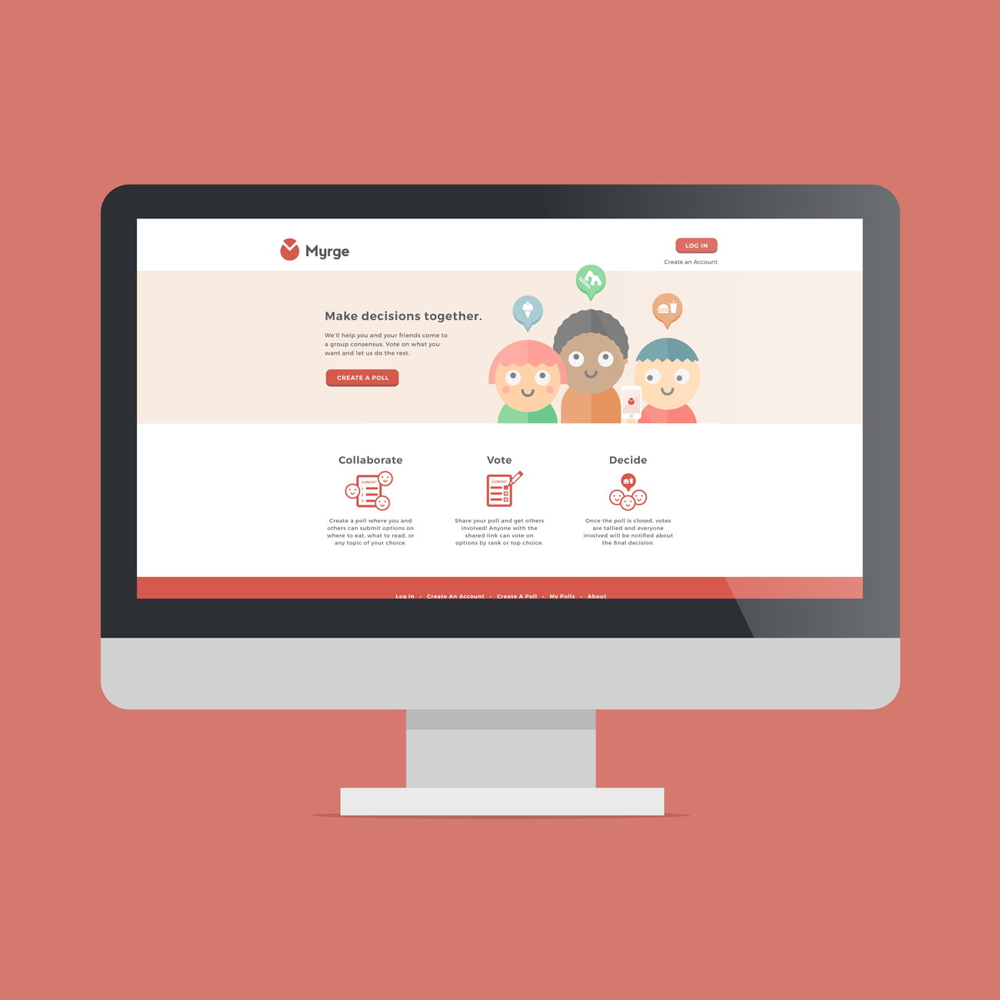
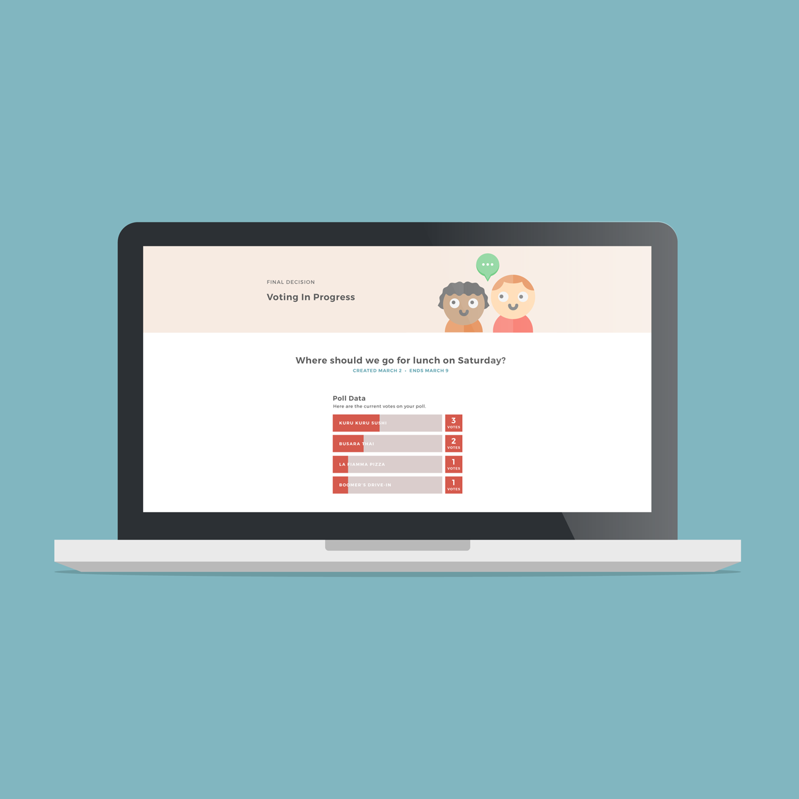
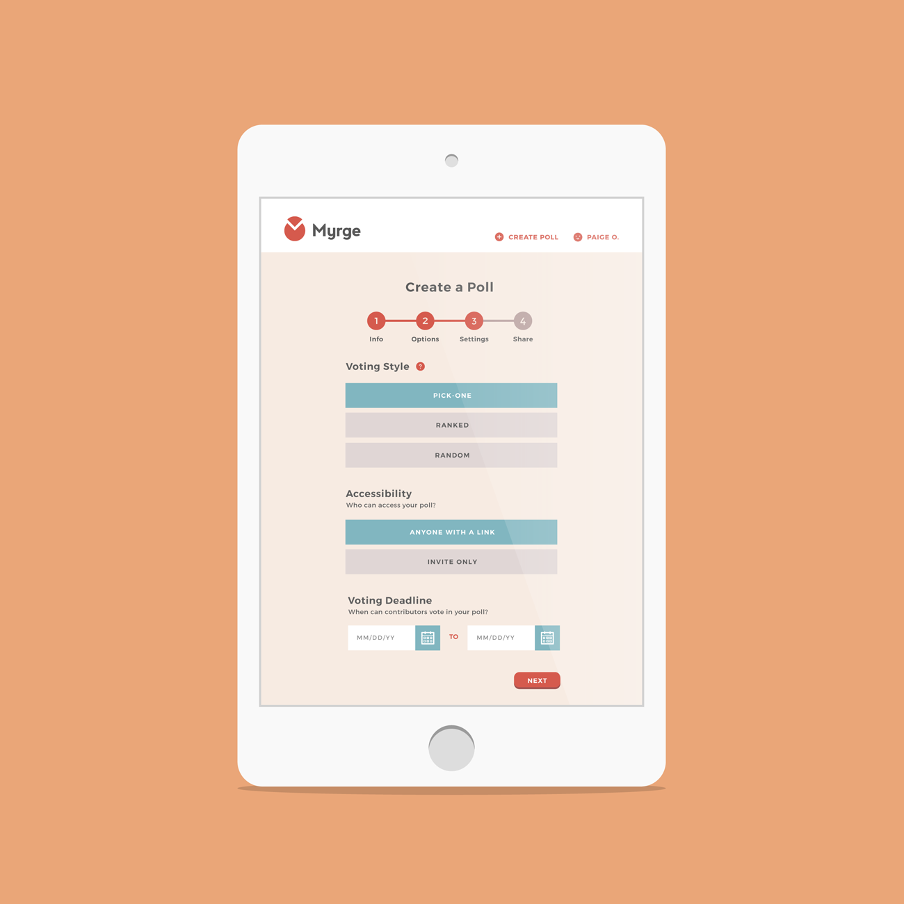
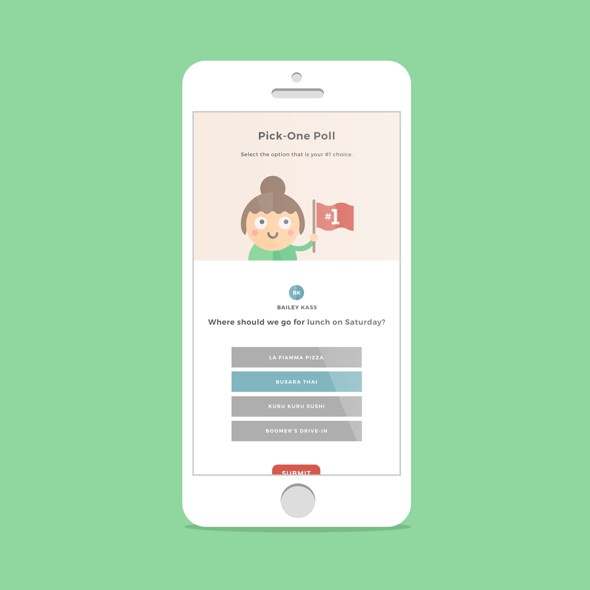
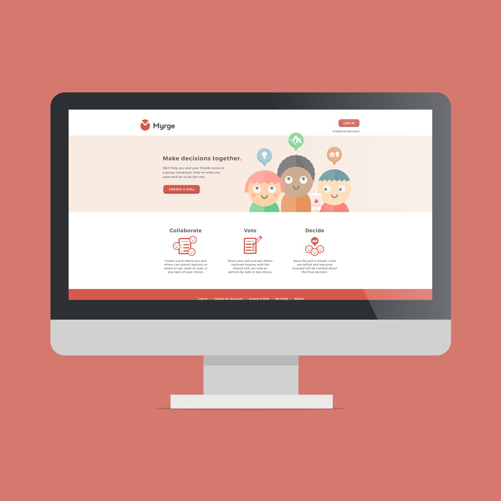
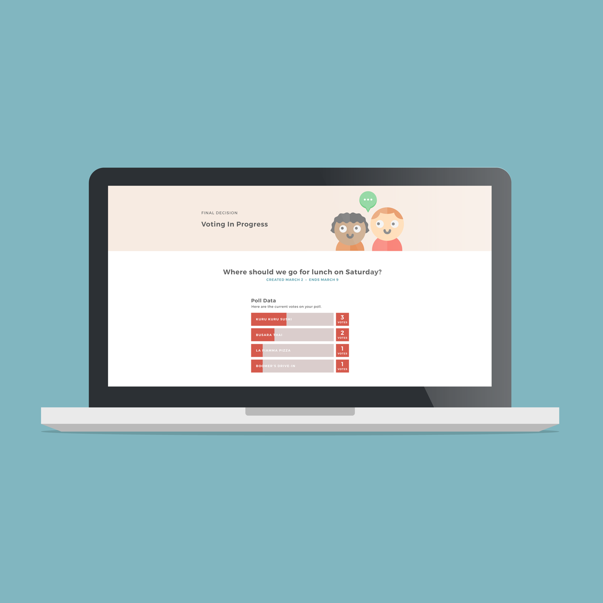
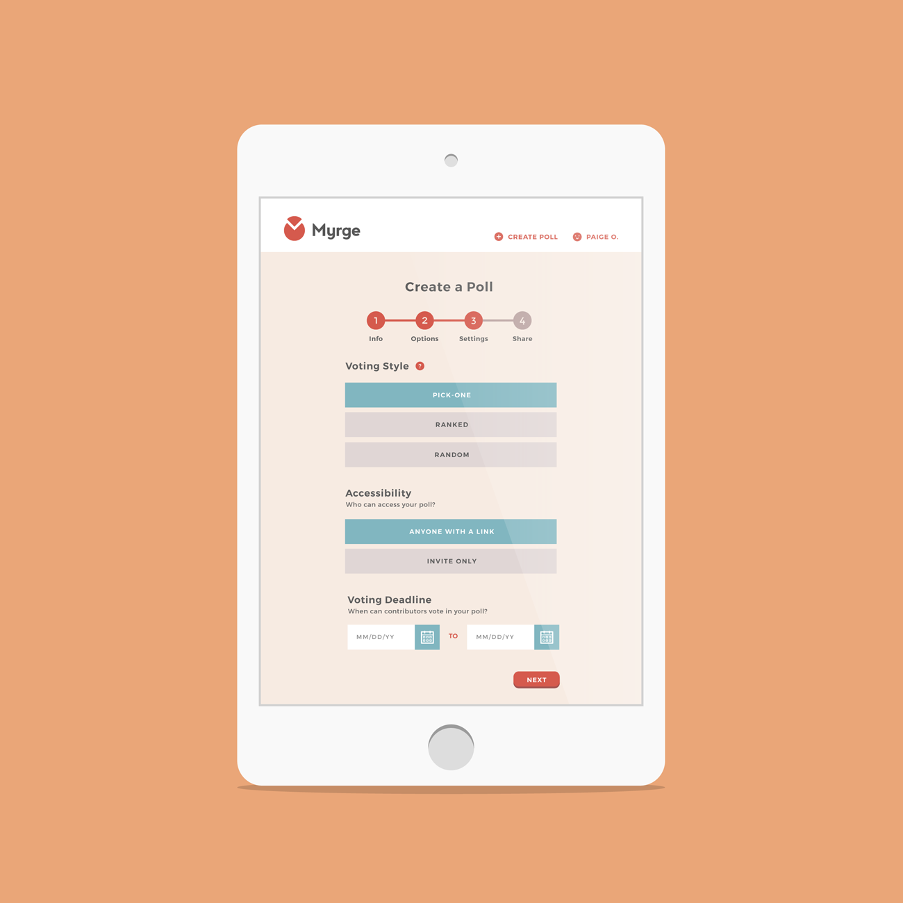
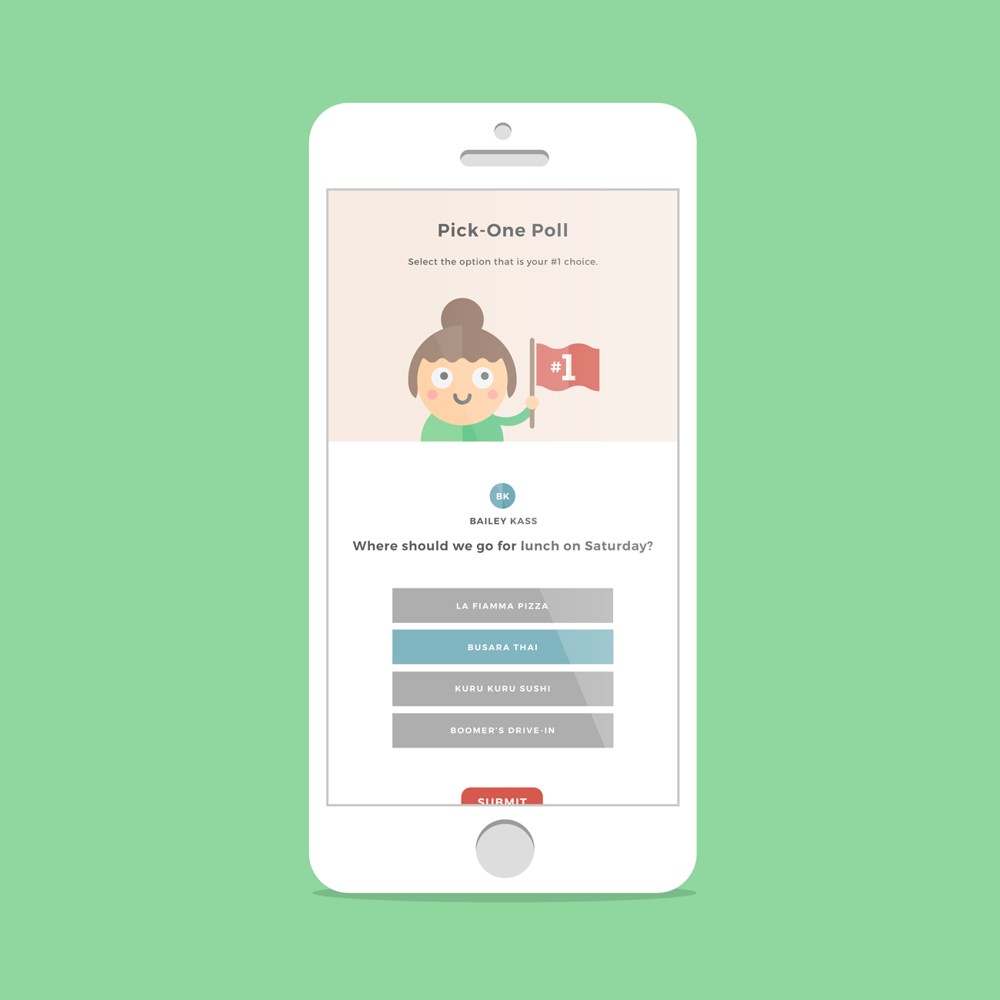

Myrge
Branding · UX/UI · Development
Making decisions is hard. Making decisions as a group is even more difficult. Myrge is a voting-based web application that takes the hassle out of coming up with a group consensus. Users can create polls, collaborate with friends to add options, and then send it to the group to vote by rank or top choice. My role in Myrge was branding and designing UI, as well as front-end development using the MEAN stack with a team of 4 other developers.
 






